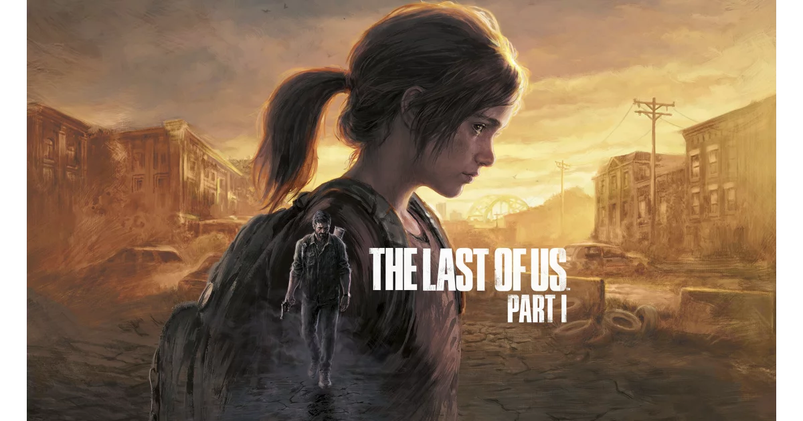
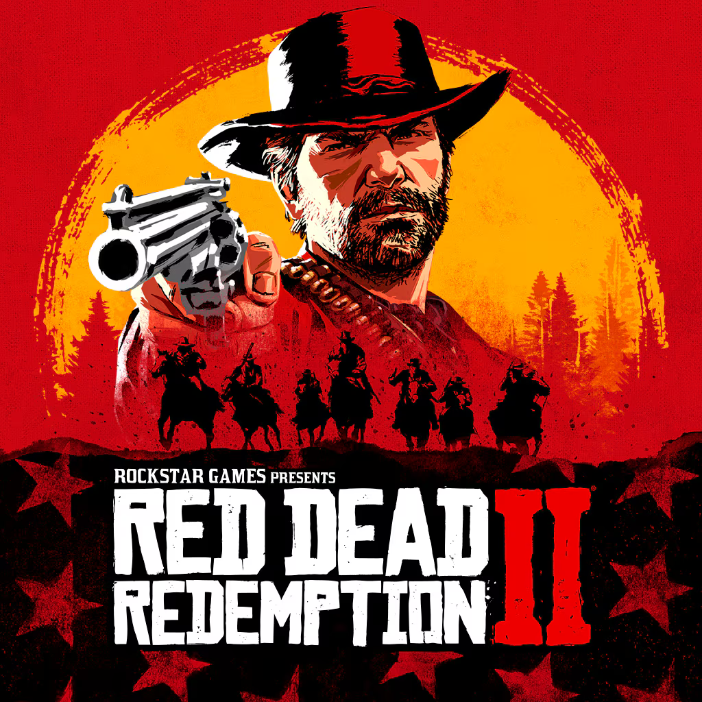
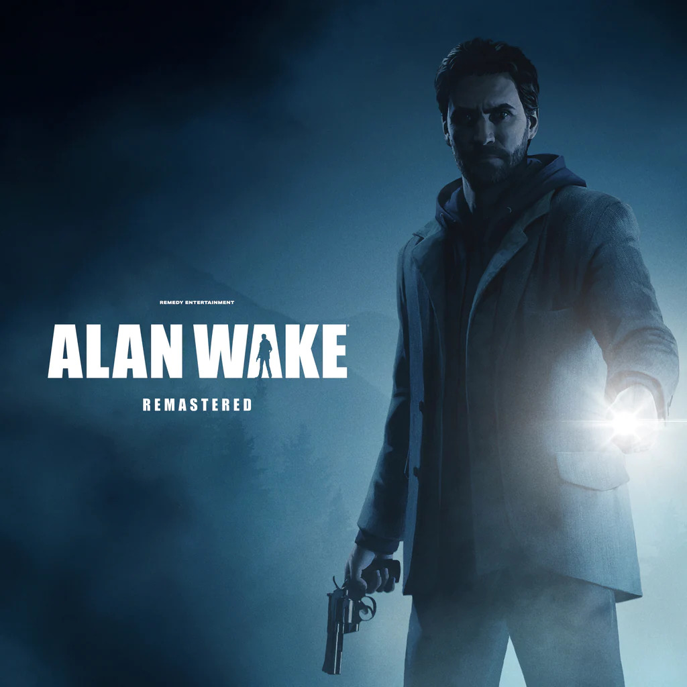
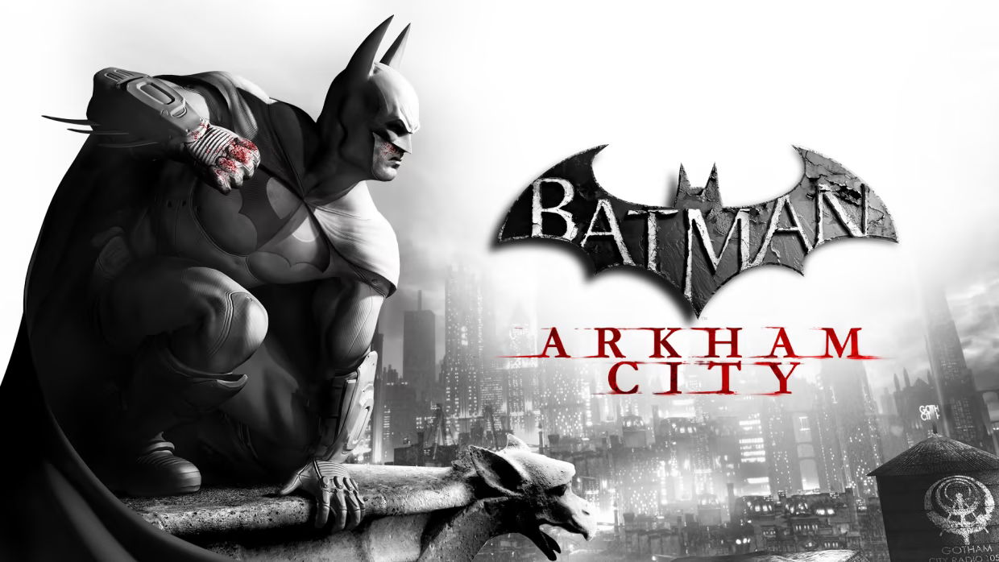

TOP 5
1.- The last of us
The Last of Us es un videojuego de acción y aventura desarrollado por Naughty Dog y lanzado en 2013. Ambientado en un mundo postapocalíptico devastado por una infección fúngica, el juego sigue la historia de Joel, un contrabandista, y Ellie, una joven con un potencial único para curar la infección.
2.- Red Dead Redemtion 2
Red Dead Redemption 2 es un videojuego de acción y aventura desarrollado por Rockstar Games, lanzado en octubre de 2018. Ambientado en un mundo abierto que recrea el Oeste americano a finales del siglo XIX, el juego sigue la historia de Arthur Morgan, un forajido y miembro de la banda Van der Linde.
3.- Alan Wake
Alan Wake es un videojuego de acción y aventura desarrollado por Remedy Entertainment, lanzado en 2010. Ambientado en el pueblo ficticio de Bright Falls, el juego sigue a Alan Wake, un escritor de novelas de misterio que busca a su esposa desaparecida mientras enfrenta una oscura entidad que parece haber cobrado vida a partir de sus propios escritos.
4.- Detroit: Become human
Detroit: Become Human es un videojuego de aventura interactiva desarrollado por Quantic Dream y lanzado en mayo de 2018. Ambientado en una futurista Detroit en 2038, el juego explora un mundo donde los androides han sido creados para servir a los humanos, pero comienzan a desarrollar conciencia y emociones propias.

5.- Batman arkham city
Batman: Arkham City es un videojuego de acción y aventura desarrollado por Rocksteady Studios y lanzado en octubre de 2011. Es la secuela de Batman: Arkham Asylum y forma parte de la aclamada serie de videojuegos basada en el universo de Batman.
